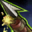
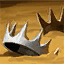
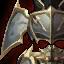
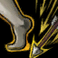
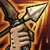
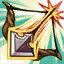
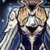
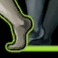

Shine Maker
Shine Maker · 5 new skills on Project4
Dead Eye StanceNew
For 2 min., when using a bow or crossbow, P. Atk. +124, basic attack Critical Damage +10%, Atk. Spd. -10%. When attacked, with a certain chance gives the party P. Atk. and M. Atk. +3% for 30 sec. Only 1 Stance can be active at a time and all Stances share the same cooldown. Requires a bow or crossbow.
Hawk StanceNew
For 2 min., when using a bow or crossbow, P. Evasion +14, M. Evasion +14, Skill Evasion +6%, Speed +10, P. Accuracy +8, P. Atk. -10%. When attacked, with a certain chance gives the party Speed +10 for 30 sec. Only 1 Stance can be active at a time and all Stances share the same cooldown. Requires a bow or crossbow.
Rapid Fire StanceNew
For 2 min., when using a bow or crossbow, P. Atk. +62, Atk. Spd. +10%, P. Skill Power -5%, attack range and skill range -200. When attacked, with a certain chance gives the party Atk. Spd. and Casting Spd. +3% for 30 sec. Only 1 Stance can be active at a time and all Stances share the same cooldown. Requires a bow or crossbow.
Sniping StanceNew
For 2 min., when using a bow or crossbow, attack range and skill range +200, Stun Atk. Rate +10%, Speed -12. When attacked, with a certain chance gives the party P. Atk. and M. Atk. +3% for 30 sec. Only 1 Stance can be active at a time and all Stances share the same cooldown. Requires a bow or crossbow.
Trigger StanceNew
For 2 min., when using a bow or crossbow, P. Skill Power +5%, P. Skill Cooldown -10%, Atk. Spd. -10%. When attacked, with a certain chance gives the party HP and MP Recovery Rate +15 for 30 sec. Only 1 Stance can be active at a time and all Stances share the same cooldown. Requires a bow or crossbow.
Accuracy
P. Accuracy +3. MP Consumption depends on your level.
Arrow Rain
Causes arrows to rain down from the sky with 7043 power. For 10 sec., deals Wind damage to the enemies making them lose 300 HP per sec. Requires a bow or crossbow. Critical. Over-hit.
Binding TrapLv. 8
Summons a trap to ensnare the enemy. The skill cooldown is fixed.
Blaze
Cancels the targeting of nearby enemies. For 5 sec. Speed +50. Prevents you from being targeted.

Burst ShotLv. 31
PvE only.
Confusion Decoy
Summons a decoy that receives attacks for you.
Death Sting
Shoots an arrow to kill. Attacks the enemy with 24306 Power added to P. Atk. Over-hit possible. Critical hit possible. Requires a bow/ crossbow to be equipped. The skill cooldown is fixed.

Detection
Finds any enemies hidden nearby.
Double ShotLv. 37
Shoots 2 arrows in succession to attack the enemy with 984 power. Requires a bow or crossbow. Critical. Over-hit.
Evade Shot
Attacks the enemy with 2020 power. P. Evasion +6 for 30 sec. Requires a bow or crossbow. Over-hit.
Flash TrapLv. 5
Summons a Trap which Stuns nearby targets momentarily with intense light. Cancels target. The skill cooldown is fixed.
Focus Skill Mastery
Skill trigger rate +100%, P. Skill Power +10%. MP Consumption is based on your level.
Hamstring Shot
Shoots an arrow at the enemy with 1973 power. For 1 min., the enemy's Speed -30%. Requires a bow or crossbow. Critical. Over-hit.
Base success rate: 70%
Attack type: Slow (Magic)
Base success rate: 70%
Attack type: Slow (Magic)
Lethal Shot
Shoots a deadly arrow that pierces the target with 7698 power. Requires a bow or crossbow. Critical. Over-hit.
Multishot
Attacks multiple enemies with 11,030 power. Requires a bow or a crossbow. Critical. Over-hit. The skill cooldown is fixed.
Pain of Sagittarius
Sacrifices your HP to recover 500 MP.
Real Target
For 30 sec., Bow Resistance -12%, Crossbow Resistance -16%.
Relax
While sitting, recovers HP, MP and CP quickly. Can not be used in combat. Consumes 10 Relax Holy Water.
Seven Arrow
Shoots 7 arrows to attack the enemy with 11,440 power. Critical. The skill cooldown is fixed.

Shape Change
Changes Shine Maker's appearance.
When activated, shows the Dwarven appearance and default equipment.
When deactivated, Shine Maker's appearance is displayed as is.
When activated, shows the Dwarven appearance and default equipment.
When deactivated, Shine Maker's appearance is displayed as is.
Slow TrapLv. 6
Summons a trap that slows nearby enemies. The skill cooldown is fixed.
Stun ShotLv. 40
Fires arrows with 344 power stunning the enemy for 9 sec. Requires a bow or crossbow. Cancels the enemy's target. Over-hit.
Base success rate: 70%
Attack type: Stun (Physical)
Base success rate: 70%
Attack type: Stun (Physical)
Ultimate Evasion
For 30 sec., Evasion +20, P. Skill Evasion +25%, Buff Cancel Resistance +80.
Vicious StanceLv. 20
Critical Damage for basic attacks +35. MP Consumption depends on your level.

Acrobatic MoveLv. 3
P. Evasion +4 when running.
Acrobatics
Maximum height user can fall without taking damage +60.

Archer's Will
When using a bow or a crossbow, P. Accuracy +8, range +50. Increases P. Skill Power and Critical Rate for basic attacks on attack.
Archery
When using a bow or crossbow, P. Atk. +200, attack range +50.
Armor MasteryLv. 5
P. Def. +13, MP Recovery Rate +10%. Additionally, P. Evasion +3 when using light armor.
Attack Speed Boost
Atk. Spd. +5%.
Boost Breath
Breath gauge +180.
Boost Evasion
P. Evasion +2.

Bow MasteryLv. 52
When using a bow or crossbow, P. Atk. +10.3.
Critical DamageLv. 2
Critical Damage for basic attacks +32
Critical Rate
Critical Rate for basic attacks +20%.
EspritLv. 8
Lets you recover quicker while running. HP Recovery Rate +2.5, MP Recovery Rate +1.8.
Fighter's Will
When using a melee weapon, P. Atk. +100, Atk. Spd. +10%. Increases P. Skill Power and Critical Rate for basic attacks on attack.

Light Armor MasteryLv. 50
P. Def. +0.9, P. Evasion +3, received Critical Rate/ Damage from basic attacks -5%.
Long ShotLv. 2
Bow and crossbow range +200.
Magic ImmunityLv. 55
M. Def. +26, M. Damage Resistance +5%.
Protection of Alignment
Resistance to tendency attributes +20. When damage is incurred, has a chance of additionally increasing M. Def. and Resistance to elemental attributes momentarily.
Protection of Elemental
Resistance to elemental attributes +20. When damage is incurred, has a chance of additionally increasing M. Def. and Resistance to elemental attributes momentarily.
Protection of Rune
M. Def. +15%. When damage is incurred, has a chance of additionally increasing M. Def. and Attribute Resistance momentarily.

Quick StepLv. 2
Speed +7
Quiver of HoldingLv. 3
Weight limit +30%.
Skill Mastery
With a certain chance, resets skill cooldown or doubles its duration. The effect is based on STR.
Vital ForceLv. 8
Lets you recover quicker while sitting. HP Recovery Rate +1.9, MP Recovery Rate +1.9.
Weapon MasteryLv. 3
P. Atk. +8.5% and additionally +2.